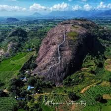

Famous Tourist Spots of Odisha
Click on the tiles below to explore Odisha’s iconic destinations with pictures and descriptions.
 Konark Sun Temple
Konark Sun Temple
 Jagannath Temple
Jagannath Temple

Devagiri Hills
Chilika Lake